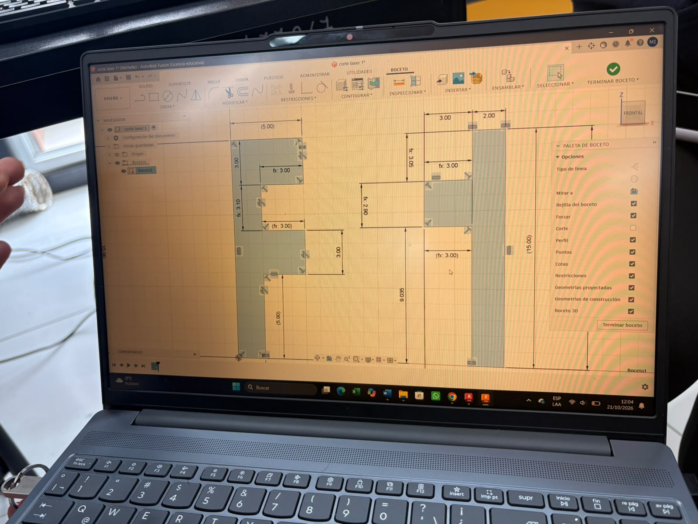
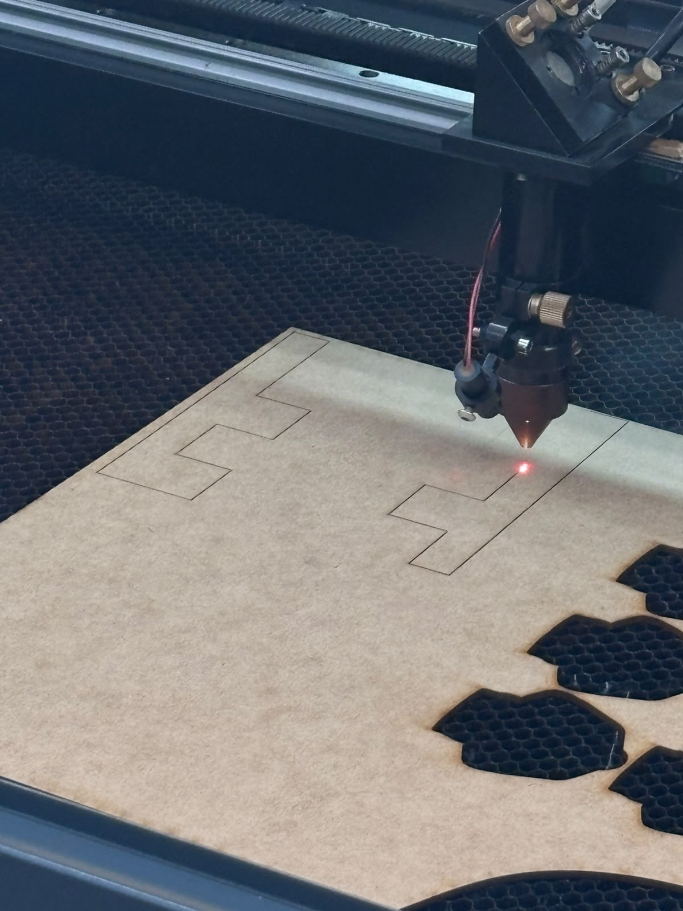
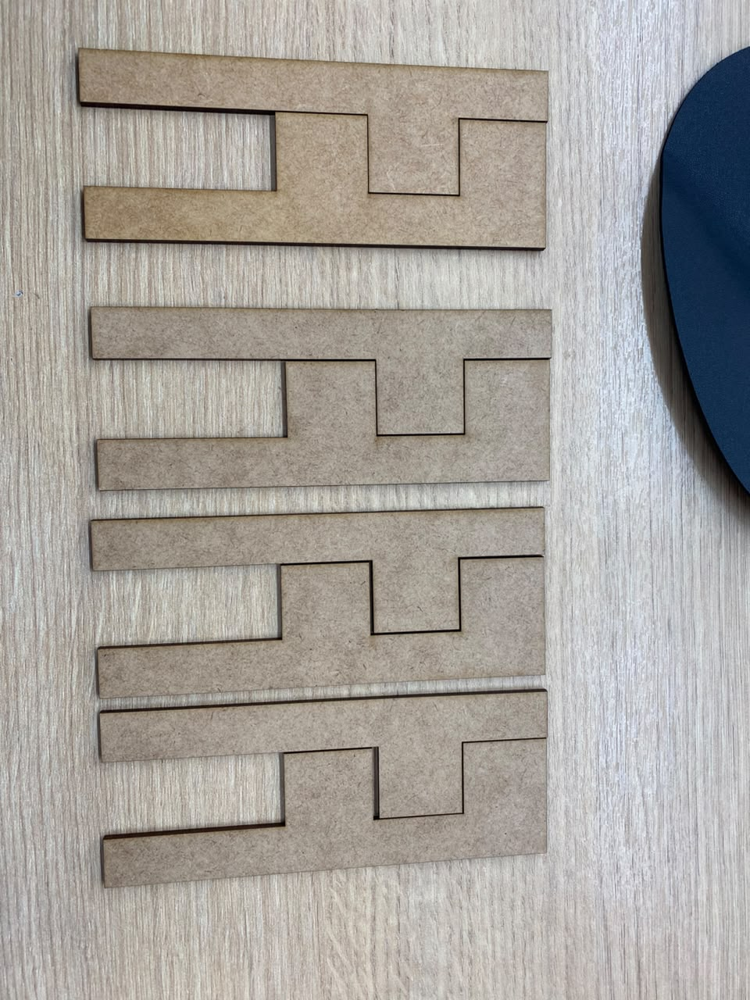
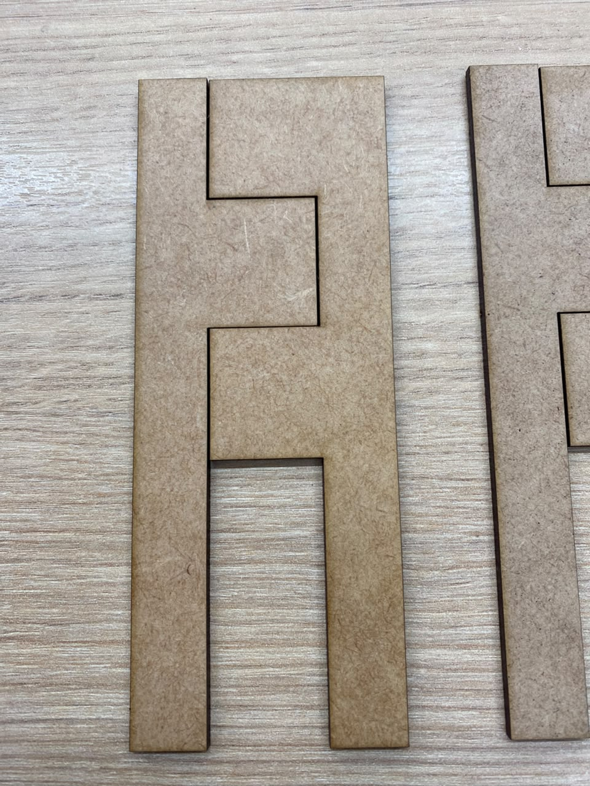

DOCUMENTACIÓN · SEMANA 04
Semana 04
Durante esta práctica trabajamos con corte láser y diseño paramétrico. Utilizamos MDF de 4 mm y diseñamos en Fusion 360 dos piezas con forma de E que encajan entre sí. Realizamos cuatro intentos ajustando la tolerancia hasta conseguir un ensamblaje adecuado.
📌 Tema y objetivo de la práctica
Tema: caracterización del corte láser y diseño paramétrico.
Objetivo: comprender el funcionamiento del corte láser y aplicar el diseño paramétrico para fabricar piezas que puedan ensamblarse mediante el ajuste de sus dimensiones y tolerancias.
🔎 Descripción de la actividad
El trabajo consistió en diseñar piezas en Fusion 360 y prepararlas para su fabricación mediante corte láser. El material utilizado fue MDF de 4 mm de espesor.
El diseño estaba formado por dos piezas con forma de E que debían encajar entre sí. Durante las pruebas, el ajuste inicial necesitó correcciones, por lo que realizamos cuatro intentos modificando la tolerancia hasta obtener un encaje adecuado.
La experiencia permitió observar que las dimensiones del diseño y las características del corte influyen en el ensamblaje final.
⚙️ Procedimiento realizado
Diseño en Fusion 360
Creamos el diseño de dos piezas con forma de E que debían encajar entre sí.
Preparación del corte
Preparamos el diseño para cortar las piezas en MDF de 4 mm de espesor.
Pruebas de tolerancia
Realizamos cuatro intentos y ajustamos la tolerancia para mejorar el encaje.
Ensamblaje final
Comprobamos que las dos piezas con forma de E encajaran correctamente.
🛠️ Equipos, materiales y software
Material: MDF de 4 mm.
Software de diseño: Fusion 360, utilizado para elaborar el diseño de las piezas.
Equipo de fabricación: máquina de corte láser.
Archivo disponible: semana04.dxf.
📊 Registro técnico
| Parámetro | Dato registrado |
|---|---|
| Material | MDF |
| Espesor | 4 mm |
| Software CAD | Fusion 360 |
| Velocidad de corte | 30 |
| Potencia mínima y máxima | 40 y 40 |
| Kerf registrado | 0,05 mm |
| Intentos de ajuste | 4 |
| Resultado | Las dos piezas en forma de E encajaron adecuadamente. |
El valor de kerf se presenta como el dato registrado por el equipo.
🧩 Diseño y ensamblaje
El diseño realizado corresponde a dos piezas con forma de E que se ensamblan entre sí. La tolerancia fue modificada durante cuatro intentos hasta conseguir el ajuste esperado.
👥 Participación del equipo
Michelle trabajó en el corte láser. Andy y David revisaron las tolerancias y realizaron mediciones con el pie de rey. El trabajo de ajuste permitió comprobar la importancia de las dimensiones para lograr un encaje adecuado. Denisse se encargó de diseñar las piezas para el corte, y entre todos revisamos los intentos hasta conseguir uno perfecto.
📁 Archivo del proyecto
Archivo de corte láser facilitado por el equipo:
DOCUMENTACIÓN VISUAL
📷 Evidencias del corte láser
Registro fotográfico de la práctica de corte láser y del diseño de las piezas.

Primera evidencia de la práctica.

Segunda evidencia de la práctica.

Tercera evidencia de la práctica.

Cuarta evidencia de la práctica.
🌱 Lo aprendido
Aprendimos que el diseño de piezas para corte láser requiere considerar el espesor del material y la tolerancia entre las partes que deben encajar.
Los cuatro intentos permitieron ajustar el diseño hasta obtener un ensamblaje adecuado. Esto mostró la importancia de probar y corregir las dimensiones antes de dar por terminado un diseño.
🧠 Conclusiones
La práctica permitió relacionar el diseño realizado en Fusion 360 con la fabricación mediante corte láser. El uso de MDF de 4 mm y las pruebas de tolerancia ayudaron a obtener dos piezas con forma de E que encajan entre sí.
Para una caracterización experimental más completa, las dimensiones diseñadas y medidas, el método utilizado para estimar el kerf y las condiciones de seguridad deben respaldarse con los registros disponibles del laboratorio.